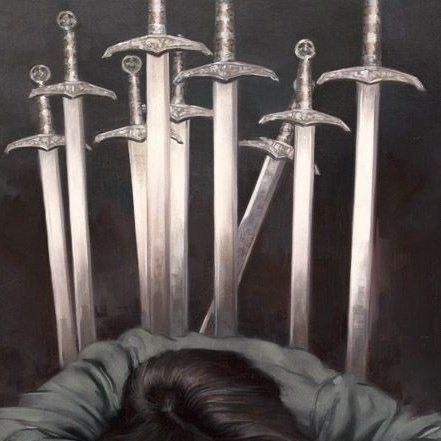

En la época medieval las cosas no eran color rosa Ignis et sanguis, Valyrian chalybe
Contextualizando la tan ansiada serie, basada en la novela de George R. R. Martin, Fire and blood (Fuego y sangre)podemos decir que esta se enfocará en la Guerra Civil interna que vive la Casa Targaryen, quienes se encuentran bajo el reinado de los Siete Reinos, ocupando así el Trono de Hierro. Si recapitulamos, la Casa Targaryen es la familia de Daenerys Targaryen, a quien vimos intentar recuperar el poder y reinar en Game of Thrones y de la cual se menciona que es la última perteneciente a dicha casa además de Jon Snow. Por lo que ahora nos sumergimos en los relatos de qué fue lo que en realidad llevó a la ruina de la familia más poderosa de los Siete Reinos a 172 años del nacimiento de Daenerys.

Espadas y desamorAlgunos personajes de La Casa del Dragón